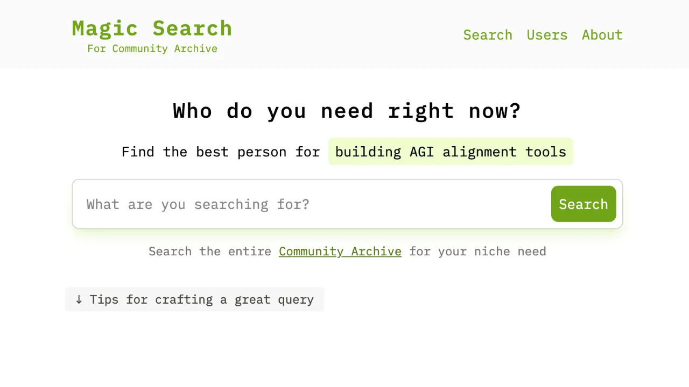
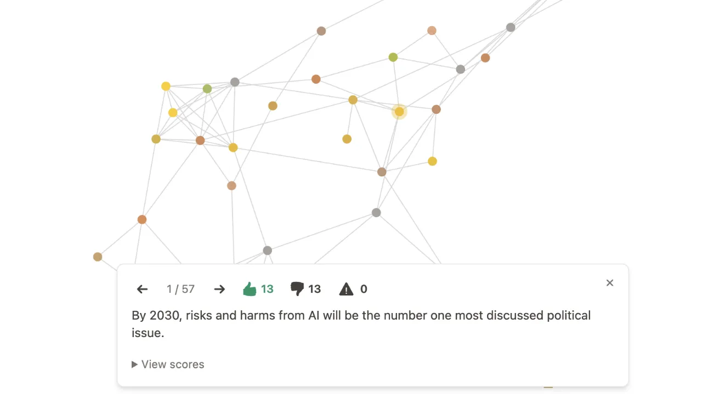
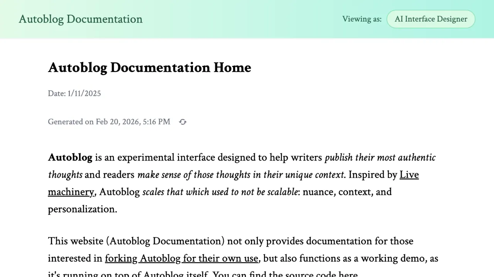
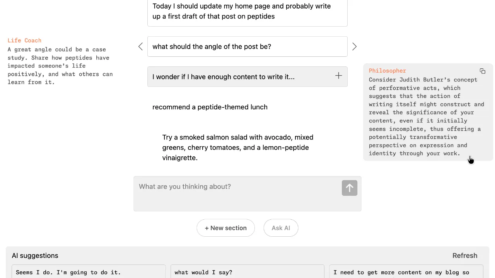
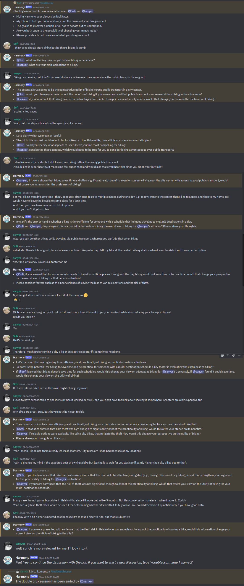

I'm a computer scientist and builder working at the intersection of cutting-edge AI, deep humanity, and eutopian futures. I make software that expands what people can think, do, and become.
I researched AI for human reasoning as a Future of Life Foundation fellow. I co-founded Mosaic Labs, building experimental LLM interfaces for metacognition and collective deliberation. Previously, I developed games at one of the top game studios in Finland.
Reach out if you'd like to work with me. While I'm normally nomadic and do most of my work remotely, I'm happy to discuss travelling to you for a project.
Project highlights

Magic Search
A search engine for the Community Archive, using ML to surface the most relevant Twitter users for specific requests.
App · Thread · Repository

Nexus
A platform for group deliberation that uses LLMs to help groups understand each other and surface insights and solutions.

Autoblog
An interface that helps writers publish authentic ideas while enabling readers to make sense of them, by translating and personalising content on demand.

Pantheon
An AI-facilitated metacognition tool exploring new ways to use LLMs to improve human thinking. Customizable AI characters and a novel tree-like UI.
App · Discussion · Repository
Cities of Orare
Winner of Foresight Institute's Worldbuilding Course. A work of speculative fiction; an aspirational worldbuild of a positive future in 2045.

Harmony
A Slack and Discord chatbot facilitating users in the double crux technique, enabling smoother argument resolution.
Work with me
I work with founders, researchers, and mission-driven organisations — most often as a technical lead, engineer, or advisor. I support projects from first idea to production and beyond, across the full stack from AI/ML backends to polished frontend interfaces.
AI interfaces · collective deliberation · tools for thought · digital democracy · futures · existential risk
I want to hear about your project.
hello@sofiavanhanen.fi